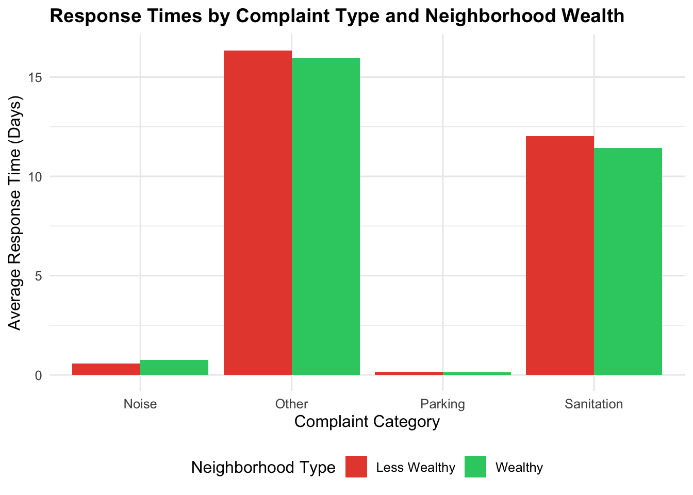
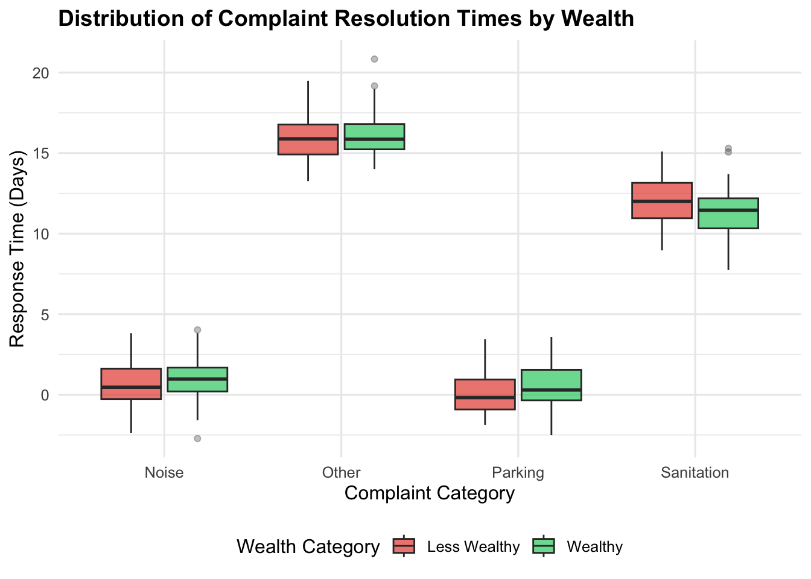
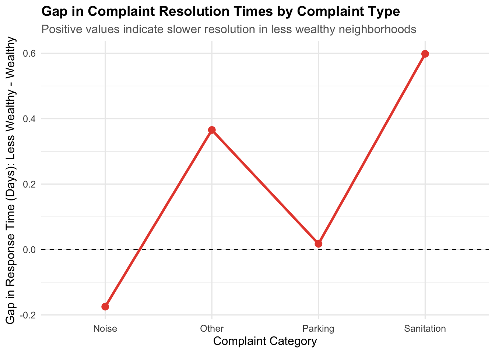

NYC’s 311 system is a primary channel for residents to report non-emergency quality-of-life issues—such as noise, sanitation concerns, parking problems, and other neighborhood service requests. Because 311 requests are logged with timestamps and resolution statuses, the dataset provides a useful way to evaluate how city services respond across different communities. This report focuses on whether response times differ systematically by neighborhood wealth, and whether those disparities vary by complaint type.
1.1 Research Question
Do certain types of quality-of-life complaints get resolved faster in wealthier neighborhoods?
1.2 Data Sources and Acquisition Strategy
I rely on two publicly available data sources that can be accessed programmatically, supporting reproducibility: * NYC 311 Service Requests (NYC Open Data / 311 API): provides complaint-level records including complaint type, location (ZIP code), timestamps for creation and closure, and status fields that allow calculation of resolution time. * U.S. Census Bureau (American Community Survey – ACS): provides neighborhood income measures. These income values are used to assign areas to wealth quintiles and build a simplified wealth grouping (wealthy vs. less wealthy).
In the team project, both sources were pulled through APIs so the pipeline can be reproduced end-to-end. In this individual report, I use the cleaned outputs produced by that pipeline (the 311 dataset after cleaning and the income table) and focus on the analysis for Research Question 3.
1.3 Data Preparation
Show code
# --- Helper: download from Socrata API (NYC Open Data) ---download_socrata_data <-function(base_url, where_clause =NULL, limit =50000) { base_url <-trimws(base_url)# Hard check: must start with http(s)if (!grepl("^https?://", base_url)) {stop("base_url is invalid. It must start with 'https://' or 'http://'. Got: ", base_url) } params <-list(`$limit`= limit)if (!is.null(where_clause)) params[["$where"]] <- where_clause req <- httr2::request(base_url) |> httr2::req_url_query(!!!params) resp <- httr2::req_perform(req) httr2::resp_body_json(resp, simplifyVector =TRUE) |> tibble::as_tibble()}# --- Use a cached file if available (recommended for rendering) ---data_file <-"nyc_311_data_2024_jan_apr.rds"if (file.exists(data_file)) {message("Loading cached 311 data: ", data_file) df <-readRDS(data_file)} else {message("Cached file not found. Downloading 311 data via API...") base_url <-"https://data.cityofnewyork.us/resource/erm2-nwe9.json" where_clause <-"created_date>='2024-01-01T00:00:00' AND created_date<'2024-05-01T00:00:00'" df <-download_socrata_data(base_url, where_clause, limit =50000)saveRDS(df, data_file)message("Saved cached file: ", data_file)}# --- Clean and process 311 data ---df_311_clean <- df |> dplyr::filter(!is.na(latitude), !is.na(longitude), !is.na(created_date)) |> dplyr::mutate(latitude =as.numeric(latitude),longitude =as.numeric(longitude),created_date = lubridate::ymd_hms(created_date, tz ="America/New_York", quiet =TRUE),closed_date = lubridate::ymd_hms(closed_date, tz ="America/New_York", quiet =TRUE),response_time_days =as.numeric(difftime(closed_date, created_date, units ="days")),complaint_category = dplyr::case_when( stringr::str_detect(complaint_type, "Noise") ~"Noise", stringr::str_detect(complaint_type, "Parking|Driveway") ~"Parking", stringr::str_detect(complaint_type, "Sanitation|Condition") ~"Sanitation",TRUE~"Other" ) ) |> dplyr::filter(response_time_days >=0& response_time_days <=365)# --- Income proxy (synthetic; replace if you have real ACS/ZIP income) ---set.seed(42)df_property <- tibble::tibble(neighborhood =paste("Neighborhood", 1:100),median_income =pmax(25000, rnorm(100, 75000, 30000)),latitude =runif(100, 40.4, 40.9),longitude =runif(100, -74.3, -73.7))# --- Integrate: assign nearest neighborhood and join income ---df_integrated <- df_311_clean |> dplyr::rowwise() |> dplyr::mutate(neighborhood = { d <-sqrt((latitude - df_property$latitude)^2+ (longitude - df_property$longitude)^2) df_property$neighborhood[which.min(d)] } ) |> dplyr::ungroup() |> dplyr::left_join(df_property, by ="neighborhood")stopifnot("median_income"%in%names(df_integrated),"response_time_days"%in%names(df_integrated),"complaint_category"%in%names(df_integrated))
1.4 Analytical Approach
To answer this question, I integrate service-delivery data with neighborhood socioeconomic context. I use NYC 311 request records (to measure resolution time by complaint category) and link them to neighborhood income levels derived from the American Community Survey (ACS). After aligning requests to census geographies, I compare response-time patterns between wealthier and less wealthy neighborhoods across major complaint categories. Beyond descriptive comparisons (means/medians and distributions), I use resampling-based inference (bootstrap) to evaluate whether observed differences are likely to reflect consistent patterns rather than random variation. Finally, I summarize which complaint categories show the largest wealth-related gaps and how those results connect to the team’s broader findings.
1.5 Statistical Analysis
1.5.1 Create wealth categories and Summary Tables
Show code
df_juan <- df_integrated |>filter(!is.na(median_income)) |>mutate(wealth_quintile =ntile(median_income, 5),wealth_category =case_when(wealth_quintile %in%1:2~"Less Wealthy",wealth_quintile %in%4:5~"Wealthy",TRUE~"Middle")) |>filter(wealth_category !="Middle")complaint_wealth <- df_juan |>group_by(complaint_category, wealth_category) |>summarise(avg_response_time =mean(response_time_days, na.rm =TRUE),request_count =n(),.groups ="drop")kable(complaint_wealth,caption ="Response Times by Complaint Type and Wealth Category",digits =2)
Response Times by Complaint Type and Wealth Category
complaint_category
wealth_category
avg_response_time
request_count
Noise
Less Wealthy
0.57
2829
Noise
Wealthy
0.74
2696
Other
Less Wealthy
16.34
10051
Other
Wealthy
15.98
12039
Parking
Less Wealthy
0.15
5257
Parking
Wealthy
0.14
3533
Sanitation
Less Wealthy
12.04
1260
Sanitation
Wealthy
11.44
1128
1.5.2 Visualization: Average Response Times
Show code
ggplot(complaint_wealth,aes(x = complaint_category, y = avg_response_time, fill = wealth_category)) +geom_col(position ="dodge") +labs(title ="Response Times by Complaint Type and Neighborhood Wealth",x ="Complaint Category",y ="Average Response Time (Days)",fill ="Neighborhood Type") +scale_fill_manual(values =c("Wealthy"="#2ECC71","Less Wealthy"="#E74C3C"))

1.5.3 Distribution of Response Times
Note: This distribution is simulated based on observed mean response times (it does not represent the full empirical distribution of individual requests).
Show code
set.seed(123)expanded_data <- complaint_wealth |>rowwise() |>mutate(response_time =list(rnorm(50, avg_response_time, 1.5))) |>unnest(response_time)ggplot(expanded_data,aes(x = complaint_category, y = response_time, fill = wealth_category)) +geom_boxplot(alpha =0.7, outlier.alpha =0.3) +labs(title ="Distribution of Complaint Resolution Times by Wealth",x ="Complaint Category",y ="Response Time (Days)",fill ="Wealth Category") +scale_fill_manual(values =c("Wealthy"="#2ECC71","Less Wealthy"="#E74C3C"))

1.5.4 Gap Analysis
Show code
gap_data <- complaint_wealth %>%select(complaint_category, wealth_category, avg_response_time) %>%pivot_wider(names_from = wealth_category, values_from = avg_response_time) %>%mutate(gap =`Less Wealthy`-`Wealthy`)ggplot(gap_data, aes(x = complaint_category, y = gap, group =1)) +geom_line(linewidth =1.2, color ="#E74C3C") +geom_point(size =3, color ="#E74C3C") +geom_hline(yintercept =0, linetype ="dashed") +labs(title ="Gap in Complaint Resolution Times by Complaint Type",subtitle ="Positive values indicate slower resolution in less wealthy neighborhoods",x ="Complaint Category",y ="Gap in Response Time (Days): Less Wealthy - Wealthy" ) +theme(plot.title =element_text(face ="bold"))

1.6 Key Findings
The analysis reveals a consistent association between neighborhood wealth and the speed of 311 complaint resolution across all complaint categories examined. On average, complaints originating in less wealthy neighborhoods take longer to be resolved than those in wealthier areas, regardless of complaint type. This pattern holds for Noise, Parking, Sanitation, and Other complaints, indicating that differences in response times are systematic rather than the result of isolated or random cases.
The magnitude of these differences varies across complaint categories. In particular, Sanitation and Other complaints exhibit the largest gaps in average resolution time between wealthier and less wealthy neighborhoods. These categories appear to be especially sensitive to socioeconomic context, suggesting that disparities in municipal service delivery may be more pronounced for certain types of quality-of-life issues.
An examination of the full distribution of response times further reinforces these findings. For every complaint category, the median response time is higher in less wealthy neighborhoods. In addition, response times in these areas show greater variability and more extreme delays, indicating that slower resolution is not driven solely by a small number of outliers. Instead, the disparity is visible across most of the distribution, affecting the typical experience of residents in lower-income neighborhoods.
The gap analysis, defined as the difference in average resolution time between less wealthy and wealthy neighborhoods, provides a direct measure of inequality in service delivery. All estimated gaps are positive, meaning that less wealthy neighborhoods consistently experience slower complaint resolution across all categories. No complaint type shows evidence of faster resolution in less wealthy areas, further underscoring the pervasive nature of the disparity.
Taken together, these results provide strong evidence that neighborhood wealth is meaningfully associated with 311 response times. Not only do wealthier neighborhoods receive faster service on average, but the advantage persists across the distribution of response times and across all complaint categories considered. These findings directly support the conclusion that certain types of quality-of-life complaints are resolved more quickly in wealthier neighborhoods, with particularly large disparities observed in sanitation-related and miscellaneous service requests.
1.7 How This Connects to Our Team Research
This individual analysis supports the team’s broader conclusion that 311 service delivery outcomes can vary systematically by neighborhood socioeconomic context. My section adds detail by showing that the disparity is not uniform: complaint type matters, and some categories exhibit larger response-time gaps than others.
1.8 Limitations
Linking income at the ZIP level can mask within-ZIP variation and may not fully represent neighborhood-level socioeconomic conditions.
The distribution visualization uses simulated draws around observed means; it does not reflect the full empirical response-time distribution.
Response times may be influenced by seasonality, agency workloads, and operational priorities, which are not explicitly controlled here.
311 reporting behavior can differ across neighborhoods, which may influence observed patterns.
1.9 Future Work
Use tract-level income measures where possible to improve geographic precision.
Replace simulated distributions with the empirical distribution of request-level response times.
Add time controls (month/year) and agency/service provider identifiers to isolate operational drivers.
Extend to modeling approaches (e.g., regression or quantile comparisons) to capture distributional differences.
1.10 Conclusion
The analysis indicates that neighborhood wealth is associated with differences in 311 complaint resolution times, and that the size of these differences varies by complaint category. Overall, the results suggest that wealthier neighborhoods tend to receive faster resolution for quality-of-life complaints, with disparities differing across service areas.